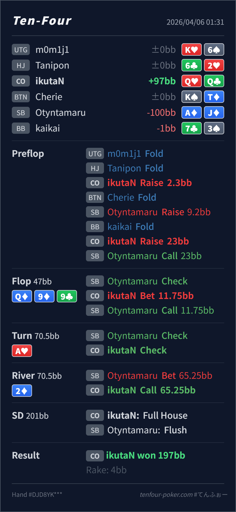

Preflop
良いQQ は CO 側の明確な value 4bet です。
主論点は、flopped full house をどう積み切るかと、flush 完成 river で boat を怖がりすぎないかです。当時の思考メモはないので、「boat だから flop / turn でもっと大きく打ちたい」「river で flush を見て弱気になる」という仮定で見ます。結論は、preflop 4bet、flop 小size、turn check、river call の流れはかなり良く、再レビューでも大筋維持で問題ありません。
Q♥Q♣Q♦ 9♦ 9♣ / A♥ / 2♦boat だから flop / turn でもっと大きく打ちたくなる、または river で flush が見えて弱気になる という仮定でレビューします。Q♥Q♣2.3BB, SB 3bet 9.2BB, CO 4bet 23BB, SB callQ♦ 9♦ 9♣ / A♥ / 2♦11.75BB, SB call65.25BB, CO call
良いQQ は CO 側の明確な value 4bet です。
Q♦ 9♦ 9♣良い
Hero は flopped full house で実質最上位です。
A♥良い
Hero は依然超強いですが、相手の bluff / thin continue を残す価値も高いです。
2♦良い
Hero の QQ フルはこの極化 range に対してかなり上位です。
| 論点 | その場で置きがちな見立て | どこがズレたか | 次回の基準 |
|---|---|---|---|
| flop の boat | invulnerable なので大きく打って一気に取りたくなる | Q♦ 9♦ 9♣ では diamond draw や TT-JJ, AK を広く続けさせる小size の価値が高いです。 | 超強い hand でも 広く続けさせる size が高EVなら小さくてよい |
| river の call | flush 完成 river lead を見て、boat でも怖くなる | QQ フルは依然かなり上位で、主に AA や 99 だけを強く警戒すればよいです。 | 目立つ完成役より 相手の value 全体にどれだけ負けるか を見る |
| ストリート | その時点の見え方 | 判断の焦点 | 評価 | 推奨 |
|---|---|---|---|---|
| Preflop | SB の 3bet-call range は JJ-QQ, AK, AQs, AJs などに寄りやすいです。 | QQ は CO 側の明確な value 4bet です。 | 良い | 23BB は素直です。 |
Flop Q♦ 9♦ 9♣ | SB の call range には A♦K♦, A♦J♦, JJ-TT, AK の一部、まれな trap が残ります。 | Hero は flopped full house で実質最上位です。 | 良い | 25%pot はかなり自然です。 |
Turn A♥ | flop call 後の SB check には flush draw、JJ-TT, AK, AQs などが残ります。 | Hero は依然超強いですが、相手の bluff / thin continue を残す価値も高いです。 | 良い | check で十分です。 |
River 2♦ | flush 完成後の river lead には flush、Ax の thin value、極化した range が入ります。 | Hero の QQ フルはこの極化 range に対してかなり上位です。 | 良い | ここは素直に call でよいです。 |
boat だから常に大きく ではなく、小さくして相手 range を広く残す のが大事な例です。QQ フルはまだ降ろしにくい層です。